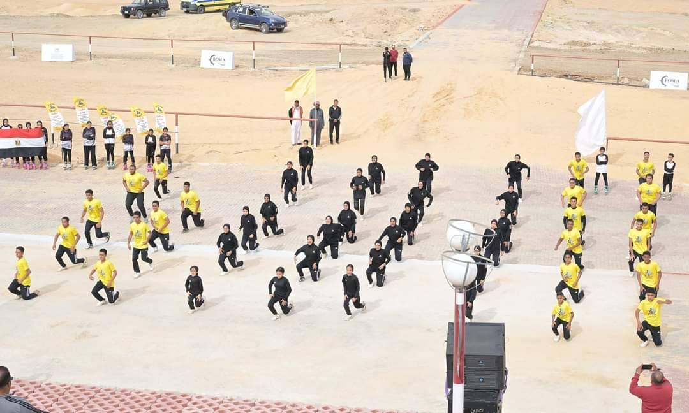

معرض الصور



شمال مدينة الخارجة - محافظة الوادي الجديد
شهد الدكتور مصطفى مدبولي، رئيس مجلس الوزراء، افتتاح نادي الهجن والفروسية الدولي بمركز الخارجة. النادي يُعد منشأة رياضية وتراثية فريدة تهدف لدعم رياضة الهجن والفروسية على مستوى محلي ودولي، ويعكس اهتمام الدولة بتطوير الرياضة وتنمية الشباب.
400 فدان
إجمالي المساحة40 مليون جنيه
التكلفة الإجمالية8 كم
طول المضمار الرياضي5 كم
طول المضمار الدولي